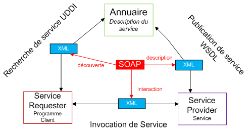
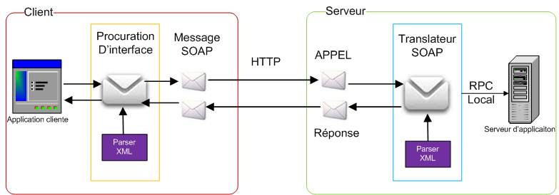
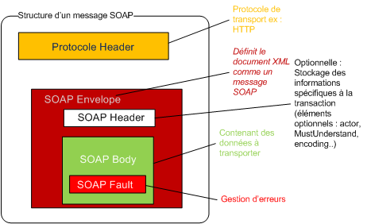
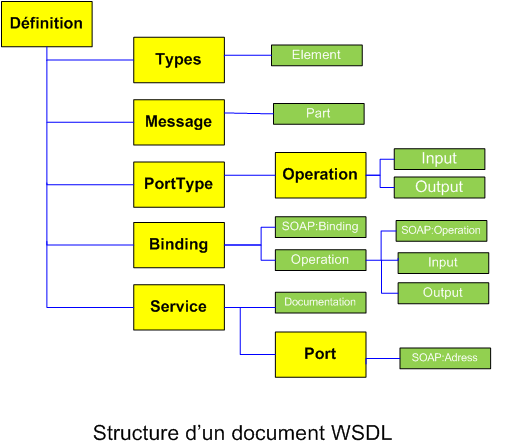
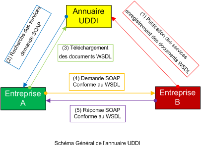
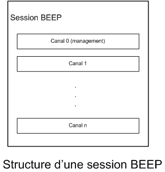

Voici un article concernant les services Web... Oui, j'ai bien dit s e r v i c e s W e b !
Vous ne savez pas ce que c'est ? Ou vous avez déjà entendu parler, mais vous n'avez jamais songé à en savoir plus à leur sujet ?
Cet article est fait pour vous ! À la fin de la lecture complète, vous découvrirez comment de grandes entreprises comme eBay, PriceMinister, Amazon, Pixmania ou encore le terrible Google, se sont développées grâce aux services Web !
Ainsi, nous allons essayer dans cet article de décrire les aspects techniques, technologiques et fonctionnels des services Web. ;)
La technologie des services Web est un moyen rapide de distribution de l'information entre clients, fournisseurs, partenaires commerciaux et leurs différentes plates-formes. Les services Web sont basés sur le modèle SOA .
D'autres technologies telles que RMI, DCOM et CORBA ont précédemment adopté ce style architectural mais ont généralement échoué en raison de la diversité des plates-formes utilisées dans les organisations et aussi parce que leur usage n'était pas adapté à Internet (problème de passage à travers des FireWalls, etc.) d'où la lenteur, voire l'absence de réponses sur ce réseau. Les applications réparties fondées sur ces technologies offrent des solutions caractérisées par un couplage fort entre les objets. Les solutions proposées par les services Web, permettent néanmoins un couplage moins fort. De plus, l'utilisation des technologies standards du Web telles HTTP et XML par les services Web facilite le développement d'applications réparties sur Internet, et permet d'avoir des applications très faiblement couplées. L'intégration est sans doute le facteur essentiel qui favorise l'utilisation des services Web.
On retrouve plusieurs définitions des services Web :
Citation : W3C
Un service Web est un composant logiciel identifié par une URI, dont les interfaces publiques sont définies et appelées en XML. Sa définition peut être découverte par d'autres systèmes logiciels. Les services Web peuvent interagir entre eux d'une manière prescrite par leurs définitions, en utilisant des messages XML portés par les protocoles Internet.
Citation : Dico du Net
Une technologie permettant à des applications de dialoguer à distance via Internet indépendamment des plates-formes et des langages sur lesquels elles reposent.
Citation : Wikipédia
Un service Web est un programme informatique permettant la communication et l'échange de données entre applications et systèmes hétérogènes dans des environnements distribués. Il s'agit donc d'un ensemble de fonctionnalités exposées sur internet ou sur un intranet, par et pour des applications ou machines, sans intervention humaine, et en temps réel.
En d'autres termes, un service Web est tout simplement un programme accessible au moyen d'Internet, qui utilise un système de messagerie standard XML, et n'est lié à aucun système d'exploitation ou langage de programmation !
En reprenant la définition du consortium W3C, voici les principaux avantages d'un service Web, à savoir :
son interface décrite d'une manière interprétable par les machines, qui permet aux applications clientes d'accéder aux services de manière automatique ;
son utilisation de langages et protocoles indépendants des plates-formes d'implantation, qui renforcent l'interopérabilité entre services ;
son utilisation des normes actuelles du Web, qui permettent la réalisation des interactions faiblement couplées et favorisent aussi l'interopérabilité.
L'intérêt d'un Service Web
Les services Web fournissent un lien entre applications. Ainsi, des applications utilisant des technologies différentes peuvent envoyer et recevoir des données au travers de protocoles compréhensibles par tout le monde. ;)
Les services Web sont normalisés car ils utilisent les standards XML et HTTP pour transférer des données et ils sont compatibles avec de nombreux autres environnements de développement. Ils sont donc indépendants des plates-formes. C'est dans ce contexte qu'un intérêt très particulier a été attribué à la conception des services Web puisqu'ils permettent aux entreprises d'offrir des applications accessibles à distance par d'autres entreprises. Cela s'explique par le fait que les services Web n'imposent pas de modèles de programmation spécifiques. En d'autres termes, les services Web ne sont pas concernés par la façon dont les messages sont produits ou consommés par des programmes. Cela permet aux vendeurs d'outils de développement d'offrir différentes méthodes et interfaces de programmation au-dessus de n'importe quel langage de programmation, sans être contraints par des standards comme c'est le cas de la plate-forme CORBA qui définit des ponts spécifiques entre le langage de définition IDl et différents langages de programmation. Ainsi, les fournisseurs d'outils de développement peuvent facilement différencier leurs produits avec ceux de leurs concurrents en offrant différents niveaux de sophistication. Les services Web représentent donc la façon la plus efficace de partager des méthodes et des fonctionnalités. De plus, ils réduisent le temps de réalisation en permettant de tirer directement parti de services existants.
Les caractéristiques d'un service Web
La technologie des services Web repose essentiellement sur une représentation standard des données (interfaces, messageries) au moyen du langage XML. Cette technologie est devenue la base de l'informatique distribuée sur Internet et offre beaucoup d'opportunités au développeur Web. :)
Un service Web possède les caractéristiques suivantes :
il est accessible via le réseau ;
il dispose d'une interface publique (ensemble d'opérations) décrite en XML ;
ses descriptions (fonctionnalités, comment l'invoquer et où le trouver ?) sont stockées dans un annuaire ;
il communique en utilisant des messages XML, ces messages sont transportés par des protocoles Internet (généralement HTTP, mais rien n'empêche d'utiliser d'autres protocoles de transfert tels : SMTP, FTP, BEEP... ) ;
l'intégration d'application en implémentant des services Web produit des systèmes faiblement couplés, le demandeur du service ne connaît pas forcément le fournisseur. Ce dernier peut disparaître sans perturber l'application cliente qui trouvera un autre fournisseur en cherchant dans l'annuaire.
Les services Web reprennent la plupart des idées et des principes du Web (HTTP, XML), et les appliquent à des interactions entre machines. Comme pour le World Wide Web, les services Web communiquent via un ensemble de technologies fondamentales qui partagent une architecture commune. Ils ont été conçus pour être réalisés sur de nombreux systèmes développés et déployés de façon indépendante. Les technologies utilisées par les services Web sont HTTP, WSDL, REST, XML-RPC, SOAP et UDDI.
REST
REST (Representational State Transfer) est une architecture de services Web. Élaborée en l'an 2000 par Roy Fiedling, l'un des créateurs du protocole HTTP, du serveur Apache HTTPd et d'autres travaux fondamentaux, REST est une manière de construire une application pour les systèmes distribués comme le World Wide Web.
XML-RPC
XML-RPC est un protocole simple utilisant XML pour effectuer des messages RPC. Les requêtes sont écrites en XML et envoyées via HTTP POST. Les requêtes sont intégrées dans le corps de la réponse HTTP. XML-RPC est indépendant de la plate-forme, ce qui lui permet de communiquer avec diverses applications. Par exemple, un client Java peut parler de XML-RPC à un PerlServer ! o_O
SOAP
SOAP (Simple object Access Protocol) est un protocole standard de communication. C'est l'épine dorsale du système d'interopérabilité. SOAP est un protocole décrit en XML et standardisé par le W3C. Il se présente comme une enveloppe pouvant être signée et pouvant contenir des données ou des pièces jointes. Il circule sur le protocole HTTP et permet d'effectuer des appels de méthodes à distance.
WSDL
WSDL (Web Services Description Language) est un langage de description standard. C'est l'interface présentée aux utilisateurs. Il indique comment utiliser le service Web et comment interagir avec lui. WSDL est basé sur XML et permet de décrire de façon précise les détails concernant le service Web tels que les protocoles, les ports utilisés, les opérations pouvant être effectuées, les formats des messages d'entrée et de sortie et les exceptions pouvant être envoyées.
UDDI
UDDI (Universal Description, Discovery and Integration) est un annuaire de services. Il fournit l'infrastructure de base pour la publication et la découverte des services Web. UDDI permet aux fournisseurs de présenter leurs services Web aux clients.
Les informations qu'il contient peuvent être séparées en trois types :
les pages blanches qui incluent l'adresse, le contact et les identifiants relatifs au service Web ;
les pages jaunes qui identifient les secteurs d'affaires relatifs au service Web ;
les pages vertes qui donnent les informations techniques.
Fonctionnement des services Web
Le fonctionnement des services Web s'articule autour de trois acteurs principaux illustrés par le schéma suivant :

Décortiquons ce schéma. :)
Service provider service
Le fournisseur de service met en application le service Web et le rend disponible sur Internet.
Service requester programme client
C'est n'importe quel consommateur du service Web. Le demandeur utilise un service Web existant en ouvrant une connexion réseau et en envoyant une demande en XML (REST, XML-RPC, SOAP).
Annuaire service registry
Le registre de service est un annuaire de services. Le registre fournit un endroit central où les programmeurs peuvent publier de nouveaux services ou en trouver. Les interactions entre ces trois acteurs suivent plusieurs étapes :
La publication du service : le fournisseur diffuse les descriptions de ses services Web dans l'annuaire.
La recherche du service : le client cherche un service particulier, il s'adresse à un annuaire qui va lui fournir les descriptions et les URL des services demandés afin de lui permettre de les invoquer.
L'invocation du service : une fois que le client récupère l'URL et la description du service, il les utilise pour l'invoquer auprès du fournisseur de services.
Description en couche des services Web
Les services Web emploient un ensemble de technologies qui ont été conçues afin de respecter une structure en couches sans être dépendante de façon excessive de la pile des protocoles. Cette structure est formée de quatre couches majeures :
Découverte de services
UDDI
Description de services
WSDL
Communication
SOAP
Transport
HTTP
Couches technologiques des services Web.
Le transport de messages XML-RPC ou SOAP est assuré par le standard HTTP.
SOAP ou XML-RPC prévoit la couche de communication basée sur XML pour accéder à des services Web.
La description d'un service Web se fait en utilisant le langage WSDL. WSDL expose l'interface du service.
La publication et la découverte des services Web sont assurées par le biais du référentiel UDDI. Un référentiel UDDI est un catalogue de services Web.
Couche transport
Cette couche est responsable du transport des messages XML échangés entre les applications. Actuellement, cette couche inclut HTTP, SMTP, FTP, et de nouveaux protocoles tels que BEEP.
Couche communication
Cette couche est responsable du formatage des données échangées de sorte que les messages peuvent être compris à chaque extrémité. Actuellement, deux styles architecturaux totalement différents sont utilisés pour ces échanges de données. Nous avons d'un côté l'architecture orientée opérations distribuées (protocoles RPC) basée sur XML et qui comprend XML-RPC et SOAP et de l'autre côté une architecture orientée ressources Web, REST (Representational State Transfer) qui se base uniquement sur le bon usage des principes du Web (en particulier, le protocole HTTP).
Couche description de service
Cette couche est responsable de la description de l'interface publique du service Web. Le langage utilisé pour décrire un service Web est WSDL qui est la notation standard basée sur XML pour construire la description de l'interface d'un service. Cette spécification définit une grammaire XML pour décrire les services Web comme des ensembles de points finaux de communication (ports) à travers lesquels on effectue l'échange de messages.
Couche publication de service
Cette couche est chargée de centraliser les services dans un registre commun, et de simplifier les fonctionnalités de recherche et de publication des services Web. Actuellement, la découverte des services est assurée par un annuaire UDDI (Universal Description, Discrovery, and Integration).
Nous avons proposé une définition de trois architectures : SOAP, son ancêtre XML-RPC et REST. Nous verrons celle de SOAP plus en détail, car elle est de nos jours la plus implémentée. ;)
La définition de SOAP ne se résume pas à trois lignes !
SOAP est un protocole d'invocation de méthodes sur des services distants. Basé sur XML, SOAP a pour principal objectif d'assurer la communication entre machines. Le protocole permet d'appeler une méthode RPC et d'envoyer des messages aux machines distantes via HTTP. Ce protocole est très bien adapté à l'utilisation des services Web, car il permet de fournir au client une grande quantité d'informations récupérées sur un réseau de serveurs tiers, voyez :

SOAP est bien plus populaire et utilisé que XML-RPC. C'est une recommandation du W3C. D'après cette recommandation, SOAP est destiné à être un protocole léger dont le but est d'échanger des informations structurées dans un environnement décentralisé et distribué. Une des volontés du W3C vis-à-vis de SOAP est de ne pas réinventer une nouvelle technologie. SOAP a été construit pour pouvoir être aisément porté sur toutes les plates-formes et les technologies existantes. ^^
Qu'est-ce que le SOAP ?
Beaucoup de définitions normalisées de SOAP ont été proposées. Une particulièrement intéressante définit SOAP comme étant une spécification pour une omniprésence, basée sur XML et sur des infrastructures distribuées.
o_O On n'a rien pigé ! Tu pourrais nous expliquer ? :euh:
Rassurez-vous, je n'allais pas vous laisser avec cette définition « vaste ». Décortiquons la. ;)
Spécification car SOAP est un document qui définit le modèle de communication. L'idée de base est que si les deux parties ont créé des programmes de mêmes spécifications, ils seront en mesure d'interagir de façon transparente.
Omniprésente car SOAP est défini à un niveau suffisamment élevé d'abstractions que tout système d'exploitation et combinaison de langages de programmation peuvent être utilisés pour créer des programmes compatibles SOAP.
Basé sur XML, SOAP est construit sur XML, ce qui signifie que les documents SOAP sont des documents XML construits en fonction d'un cahier de charges plus strict.
Infrastructure distribuée, SOAP ne précise pas quelles données peuvent être déplacées ou bien quels appels de fonctions peuvent avoir lieu sur elle. Les applications construites sur la spécification SOAP peuvent déplacer les données d'un ordinateur A à un ordinateur B et par la suite à une autre application écrite sur la même spécification.
Structure d'un message SOAP
La grammaire de SOAP est assez simple à comprendre. Elle procure un moyen d'accès aux objets par appel de méthodes à distance. Les deux plus fortes fonctionnalités de SOAP sont sa simplicité et le fait que tout le monde a accepté de l'utiliser. Un message SOAP est composé de deux parties obligatoires : l'enveloppe SOAP et le corps SOAP ; et une partie optionnelle : l'en-tête SOAP.

SOAP envelope (enveloppe) est l'élément de base du message SOAP. L'enveloppe contient la spécification des espaces de désignation (namespace) et du codage de données.
SOAP header (entête) est une partie facultative qui permet d'ajouter des fonctionnalités à un message SOAP de manière décentralisée sans agrément entre les parties qui communiquent. C'est ici qu'il est indiqué si le message est mandataire ou optionnel. L'entête est utile surtout, quand le message doit être traité par plusieurs intermédiaires.
SOAP body (corps) est un container pour les informations mandataires à l'intention du récepteur du message, il contient les méthodes et les paramètres qui seront exécutés par le destinataire final.
SOAP fault (erreur) est un élément facultatif défini dans le corps SOAP et qui est utilisé pour reporter les erreurs.
L'enveloppe SOAP
L'enveloppe SOAP sert de conteneur aux autres éléments du message SOAP, elle est définie au début par la balise <soap:Envelope> et se termine par la balise </soap:Envelope>. Les messages SOAP ne peuvent pas être envoyés en lots, autrement dit l'enveloppe contient un seul message constitué d'un entête facultatif (SOAP header) et d'un corps obligatoire (SOAP body).
Toutes les balises XML associées à SOAP ont le préfixe soap (on trouve des développeurs utilisant "soap-env"). L'entête est <soap:Header> et le corps <soap:Body>.
SOAP repose entièrement sur les espaces de noms XML. Dans cet exemple, les espaces de noms sont introduits à l'aide d'un mot-clé « xmlns » XML namespace qui signifie espace de noms XML. L'espace de noms est utilisé pour identifier toutes les balises afin d'éviter les conflits. La spécification impose que tous les attributs contenus dans l'enveloppe SOAP soient explicitement associés à un namespace, de manière à supprimer toute ambiguïté. Par convention, la spécification SOAP définit deux namespaces fréquemment utilisés :
soap-env ou soap associé à l'URI « [..]schemas.xmlsoap.org/soap/envelope » pour définir le namespace de l'enveloppe dans la version 1.1, et à « [..]wwww.w3.org/2001/06/soap-envelope » dans la version 1.2 reprise par le W3C.
soap-enc:encodingStyle associé à l'URI « [..]schemas.xmlsoap.org/soap/encoding » pour la définition des formats de types de données dans la version 1.1, et à « [..]www.w3.org/2001/06/soap-encoding » dans la version 1.2.
Deux autres espaces de noms fortement utilisés dans SOAP sont « xsd » et « xsi ».
xsd namespace précise que les balises proviennent de la définition de schéma XML.
xsi namespace indique que les balises viennent d'une instance d'un schéma XML.
Le corps SOAP
Le corps SOAP est un élément obligatoire dans le message SOAP. Il contient l'information destinée au receveur. Le corps (body) doit fournir le nom de la méthode invoquée par une requête ainsi que les paramètres associés a celle-ci.
Le contenu du corps SOAP est utilisé pour spécifier un appel de méthode à un ordinateur distant avec les valeurs de paramètre. Par exemple, la demande du solde d'un compte bancaire.
L'extrait suivant représente un corps SOAP qui fait appel de procédure distante (RPC) à une méthode appelée checkAccountBalance().
Le corps du message SOAP commence avec la balise <soap:Body> et se termine avec la balise </soap:Body>. L'élément <checkAccountBalance> fournit le nom de la méthode à appeler : checkAccountBalance. L'élément accountNumber est un paramètre qui est passé dans la méthode checkAccountBalance. Les attributs xsi et xsd définissent les espaces de noms qui vont être utilisés dans le corps du message. La définition de xsi permet d'utiliser xsi:type dans le corps du message, le xsd:int signifie que cette valeur est de type entier. 1234567890 est la valeur donnée au paramètre.
L'ensemble de ces caractères représente un appel de méthode qui a la forme suivante en langage C :
int Balance = checkAccountBalance(1234567890);
Une différence importante entre SOAP et XML-RPC est que les méthodes SOAP prennent des paramètres nommés. L'ordre des paramètres, lui, n'a pas d'importance, contrairement à XML-RPC.
L'en-tête SOAP
L'en-tête SOAP est un élément facultatif dans un message SOAP. Toutefois, si un en-tête est présent, il doit être le premier élément qui apparaît dans l'enveloppe SOAP. Le format de l'en-tête n'est pas défini dans le cahier des charges et par conséquent, il est à la disposition des clients et des services pour leur propre usage. Cet usage typique serait de communiquer des informations authentifiant l'émetteur ou bien encore le contexte d'une transaction dont le message SOAP doit passer par plusieurs intermédiaires SOAP pour arriver au destinataire final. Un intermédiaire SOAP est toute entité capable de recevoir et transmettre des messages SOAP.
L'en-tête d'un message SOAP commence avec la balise <soap:Header> et se termine avec la balise </soap:Header>, je vous rappelle qu'on peut aussi faire <sopa-env:Header></sopa-env:Header>.
Trois attributs associés à l'en-tête SOAP peuvent être utilisés :
soap:mustUnderstand : cet attribut prend la valeur 1 ou 0. La valeur 1 signale que le récepteur doit reconnaître l'information présente dans l'en-tête et que son traitement est obligatoire. La valeur 0 indique que l'en-tête peut être ignoré par le récepteur.
soap:role : sert à indiquer le destinataire SOAP auquel un bloc d'en-tête SOAP particulier est destiné.
soap:relay : est utilisé pour indiquer si un bloc d'en-tête SOAP ciblé sur un récepteur SOAP doit être réacheminé (relayé) s'il n'est pas traité.
<soap:role> et <soap:relay> sont utilisés conjointement par l'ensemble des nœuds SOAP intermédiaires qu'un message SOAP doit traverser pour arriver au destinataire final.
Exemple de Bloc Header, Message à destination de Plusieurs Noeud SOAP
<!--
Élément USER : À destination du nœud RightManager
-->
<soap:Header>
<m:User xmlns:m="http://www.monsite.com/rights/"
soap:actor="http://www.monsite.com/rights/RightsManager">
Thunderseb
</m:User>
<!--
Élément Session : À destination du nœud final
-->
<m:Session xmlns:m="http://www.monsite.com/session/"
soap:mustUnderstand="1">
12AE3C
</m:Session>
<!--
Élément USER : À destination du prochain nœud
-->
<m:Lang xmlns:m="http://www.monsite.com/lang/"
soap:actor="http://schemas.xmlsoap.org/soap/next" soap:mustUnderstand="0"> FR
</m:Lang>
</soap:Header>
Si vous avez bien suivi, vous ne devriez pas avoir de problèmes à comprendre cet exemple. ;)
Message d'erreur SOAP
Afin de récupérer le plus grand nombre d'erreurs, l'approche SOAP se base essentiellement sur le bon usage de la balise <soap:fault> qui est contenue dans le corps SOAP. Cette balise est utilisée pour communiquer un problème qui a eu lieu dans la tentative de réalisation de la demande adressée au service Web. L'élément d'erreur est facultatif et figure uniquement dans les messages de réponse, il ne peut y apparaître qu'une seule fois. La balise <soap:fault> peut contenir quatre autres balises facultatives :
faultcode : cet élément est requis par le cahier des charges. Il contient un code indiquant la nature du problème.
faultstring : est la version lisible par l'homme de la balise faultcode. C'est la traduction en langage naturel du code d'erreur.
faultactor : indique le service qui a généré l'erreur. Cela est important lorsqu'une chaîne de services a été utilisée pour traiter la demande.
detail : cet élément doit contenir autant d'informations que possible sur l'état du serveur à l'instant de l'apparition de l'erreur. Il contient souvent des valeurs de variables au moment de l'échec.
Quatre types de codes d'erreur sont définis par la spécification :
soap:Server : indique qu'une erreur s'est produite sur le serveur, mais pas avec le message lui-même.
soap:Client : signifie que le message reçu contient une erreur.
soap:VersionMismatch : cette erreur se produit lorsque les versions des protocoles SOAP utilisés par le client et le serveur sont différentes.
soap:MustUnderstand : cette erreur est générée lorsqu'un élément dans l'en-tête ne peut pas traiter alors qu'il est marqué comme obligatoire.
Exemple : Bloc Fault
<soap:Body>
<soap:Fault>
<!--
Identifiant de l'erreur ? défini par SOAP
-->
<faultcode>soap:Server</faultcode>
<!--
Description brève du message
-->
<faultstring>Impossible de router le message.</faultstring>
<!--
Composant qui a généré l'erreur (URL).
-->
<faultactor>http://www.monsite.com/messageDispatcher</faultactor>
<!--
Message spécifique à l'application
-->
<detail>
<m:error xmlns:m="http://www.monsite.com/errors"> E_NO_ROUTE </m:error>
</detail>
</soap:Fault>
</soap:Body>
Exemple de communication
Pour finir avec SOAP, voici un exemple de communication, ne me le faites pas redire une troisième fois ! Lisez bien les définitions précédentes. :diable:
Requête sur un service Web .net
<!--
Protocole de transport ex. HTTP
-->
POST /stockquote.asmx HTTP/1.1
Host: www.webservicex.net Content-Type: text/xml; charset=utf-8
Content-Length: length
SOAPAction: "http://www.webserviceX.NET/GetQuote"
<?xml version="1.0" encoding="utf-8"?>
<!--
Définit le document XML comme un message SOAP.
-->
<soap:Envelope xmlns:xsi="http://www.w3.org/2001/XMLSchema-instance"
xmlns:xsd="http://www.w3.org/2001/XMLSchema"
xmlns:soap="http://schemas.xmlsoap.org/soap/envelope/">
<!--
Contenant des données à transporter.
-->
<soap:Body>
<GetQuote xmlns="http://www.webserviceX.NET/">
<symbol>string</symbol>
</GetQuote>
</soap:Body>
</soap:Envelope>
Appel du service Web stockquote en PHP, par exemple
<?php
$params['symbol']="Pegeot";
/*
Création d'un objet SOAPCLIENT.
L'ouverture du fichier WSDL va permettre d'automatiser l'utilisation du <italique>Web Service</italique>.
Les méthodes définies dans le WSDL seront vues comme des méthodes internes.
*/
$client = new SoapClient("http://www.webservicex.net/stockquote.asmx?wsdl");
/*
Appel de la méthode GETQUOTE du WS STOCKQUOTE vue comme une méthode locale.
*/
$result = $client->GetQuote($params);
$ResultQuote = $result->GetQuoteResult;
echo $ResultQuote;
?>
Implémentation de SOAP
Comme je l'ai répété tout le long de cet article, les services Web ne se limitent pas à un langage en particulier ou à un système d'exploitation précis, voici quelques langages avec l'implémentation de SOAP :
JAVA (API et outils associés) - JAX-RPC (Java XML ? based RPC) : utilisation de SOAP en mode RPC. - JAXR (JA XML Registries) : utilisation de UDDI. - JAXM (JA XML Messaging) : utilisation de SOAP en mode message.
Microsoft (technologie .NET) - API dans la bibliothèque de classes .NET.
Un document WSDL se compose d'un ensemble d'éléments décrivant les types de données utilisés par le service, les messages que le service peut recevoir, ainsi que les liaisons SOAP associées à chaque message. Le schéma suivant illustre la structure du langage WSDL qui est un document XML, en décrivant les relations entre les sections constituant un document WSDL.

Un fichier WSDL contient donc sept éléments.
Types : fournit la définition de types de données utilisés pour décrire les messages échangés.
Messages : représente une définition abstraire (noms et types) des données en cours de transmission.
PortTypes : décrit un ensemble d'opérations. Chaque opération a zéro ou un message en entrée, zéro ou plusieurs messages de sortie ou d'erreurs.
Binding : spécifie une liaison entre un <portType> et un protocole concret (SOAP, HTTP...).
Service : indique les adresses de port de chaque liaison.
Port : représente un point d'accès de services défini par une adresse réseau et une liaison.
Opération : c'est la description d'une action exposée dans le port.
Le document WSDL peut être divisé en deux parties. Une partie pour les définitions abstraites, tandis que la deuxième contient les descriptions concrètes.
La description concrète est composée des éléments qui sont orientés vers le client pour le service physique. Les trois éléments concrets XML présents dans un WSDL sont :
<wsdl:service> ;
<wsdl:port> ;
<wsdl:binding>.
La description abstraite est composée des éléments qui sont orientés vers la description des capacités du service Web. Ses éléments abstraits définissent les messages SOAP de façon totalement indépendante de la plate-forme et de la langue. Cela facilite la définition d'un ensemble de services pouvant être implémentés par différents sites Web. Les quatre éléments abstraits XML qui peuvent être définis dans un WSDL sont :
<wsdl:types> ;
<wsdl:message> ;
<wsdl:operation> ;
<wsdl:portType>.
L'élément types
L'élément <types> décrit tous les types de données utilisés entre le client et le serveur. Ces types sont l'équivalent en structures C++ ou Java à des classes qui ne contiennent que des données et pas de méthodes. WSDL n'est pas liée exclusivement à un système de typage, mais il utilise le XML schéma de la spécification W3C :
L'élément <message> comprend la section Messages. Si nous envisageons les opérations comme des fonctions, alors un élément <message> définit les paramètres pour cette fonction. L'exemple suivant représente les messages correspondant à l'ajout d'un nouveau client à un service Web.
Chaque élément enfant <part> de l'élément <message> correspond à un paramètre et possède un attribut de nom et de type, tout comme un paramètre de fonction a un nom et un type. Les paramètres d'entrée sont définis dans un élément <message> unique et séparé des paramètres de sortie, qui se trouvent dans leur propre élément <message>. Le message addCustomer va ajouter un nouveau client (customer) au service Web par l'envoi d'une instance de l'élément client que nous avons défini dans l'élément <type>.
Le nom d'un élément <message> de sortie se termine par Response. Dans cet exemple, le message de réponse est confirmationResponse, il renvoie au client un nombre entier lui indiquant le succès de l'opération.
L'élément opération
L'élément <operation> est analogue à un appel de méthode en Java ou d'une sous-routine dans Visual Basic. La différence est que seulement trois messages sont autorisés dans une opération :
Input Message : définit les données que le service Web s'attend à recevoir.
OutPut Message : définit les données que le service Web prévoit d'envoyer en réponse.
Fault Message : définit les messages d'erreurs qui peuvent être retournés par le service Web.
Plusieurs types d'opération peuvent être déclarés dans un document WSDL :
Request/Response : le client envoie la demande, et le service répond.
Solicit/Response : un service Web envoie un message au client, et le client répond.
One-way : un client envoie un message au service Web, mais ne s'attend à aucune réponse.
Notification : un service Web envoie un message au client, mais n'attend pas de réponse.
L'élément portType
Un port est simplement une suite d'opérations. De nombreux langages de programmation appellent cela une bibliothèque, un module ou une classe, mais dans le monde de l'échange de messages, les points de connexion sont des ports, et la définition abstraite d'un port est appelée <portType>.
L'élément <portType> contient l'ensemble des opérations que peut effectuer un service Web. Cependant, il ne fournit pas d'informations sur la façon de se connecter directement à ce service. Il prévoit un point d'arrêt où un client peut obtenir des informations sur tous les traitements offerts par un service Web. La syntaxe d'un portType est définie comme suit :
L'élément <PortType> défini dans l'exemple est identifié par un nom unique newCustomerPortType. Il contient l'opération createNewsCustomer de type Request/Response qui va ajouter un nouveau client au service Web en utilisant les messages d'entrée (input) et de sortie (output) définis précédemment dans la section message.
L'élément binding
L'élément <binding> permet d'obtenir les informations nécessaires pour connecter physiquement un service Web. Il décrit les spécifications concrètes de la manière dont le service sera implémenté : protocole de communication et format des données pour les opérations et messages définis par un portType particulier.
Le langage WSDL possède des extensions internes pour définir des services SOAP, de fait, les informations spécifiques à SOAP se retrouvent dans cet élément.
L'élément <binding> a deux objectifs. Tout d'abord, il sert de lien entre les éléments abstraits et les éléments concrets dans le WSDL. Ensuite, il fournit un conteneur pour des informations telles que le protocole et l'adresse du service Web.
La syntaxe d'un élément <binding> est représentée comme suit :
La première ligne de l'élément binding contient les attributs name et type. L'attribut name indique le nom identifiant la liaison binding, ici le nom de la liaison est newCustomerBinding. L'attribut type permet d'établir la liaison avec un portType à travers le nom du portType. Dans notre cas, cette liaison fait référence au portType newCustomerPortTyp défini précédemment dans la section portType.
soap:binding : cet élément indique que la liaison sera mise à disposition via SOAP. En outre, le protocole HTTP est utilisé pour envoyer les documents SOAP. L'attribut style indique le format des messages SOAP. Un style de valeur rpc spécifie un format RPC des données contenues dans le corps des messages SOAP échangés.
soap:operation : cet élément indique la liaison d'une opération avec un protocole SOAP. L'attribut soapAction spécifie que l'en-tête SOAPAction HTTP doit être utilisé pour identifier le service.
soap:body : cet élément fournit des détails sur la façon dont les messages d'entrée et de sortie doivent apparaître à l'intérieur du corps SOAP ainsi que le namespace de l'URL d'un service particulier. L'attribut use définit la manière dont les données sont encodées à l'intérieur du corps SOAP. Si la valeur de cet attribut est encoded, comme dans notre exemple, alors la valeur de l'attribut encodingStyle fait référence à une URL qui indique comment les données doivent être codées. Dans notre exemple, les opérations d'entré (input) et sortie (output) utilisent le même style de codage défini par l'URL : « [..]schemas.xmlsoap.org/soap/encoding/ ».
L'élément port
Un port définit un point d'accès individuel, en spécifiant une adresse unique pour une liaison binding. La syntaxe d'un <port> est la suivante :
L'élément port contient deux attributs : l'attribut name et l'attribut binding. L'attribut name donne un nom unique parmi tous les ports définis dans le document WSDL. Dans notre exemple, le nom du port est newCustomerPort. L'attribut binding fait référence à l'élément bindingnewCustomerBinding défini dans la section binding du document WSDL. Le port contient un élément <soap:address> qui spécifie à l'aide de l'attribut location une URL représentant l'adresse du port. Dans notre exemple, l'adresse du port est : « [..]www.stevepotts.com:1776/soap/servlet/rpcrouter ».
Un port ne doit pas définir plus d'une adresse. Un port ne doit pas définir d'autres informations de liaisons autres que celles de l'adresse.
L'élément service
L'élément <service> définit les ports soutenus par le service Web. Il contient aussi un élément <documentation> qui fournit la documentation lisible par l'homme. Pour chaque liaison supportée, un élément port est désigné. L'élément <service> n'est donc qu'une simple collection de ports.
La syntaxe d'un élément <service> est présentée comme suit :
<wsdl:service name="newCustomerService">
<documentation>Ajouter un nouveau client</documentation>
<wsdl:port binding="newCustomerBinding" name="newCustomerPort">
<soap:address location="http://www.stevepotts.com:1776/soap/servlet/rpcrouter">
</wsdl:port>
</wsdl:service>
L'attribut name<wsdl:service name=[..]> donne un nom unique parmi tous les services définis dans un document WSDL. Dans notre exemple, cet attribut a pour valeur newCustomerService. L'élément service défini dans l'exemple contient le port newCustomerPort qui est associé avec la liaison bindingNewCustomerService utilise donc le protocole SOAP, et est accessible via l'adresse définie dans l'élément port.
L'élément définition
L'élément racine dans un document WSDL est <wsdl:definition>. Il contient un attribut targetNamespace qui définit un certain nombre d'espaces de noms namespace auquel tous les noms déclarés dans un élément du document WSDL appartiennent, ce qui permet d'éviter les conflits de nommage.
Dans cet exemple, l'attribut targetNamespace a pour valeur l'URL : «[..]www.stevepotts.com/customer.wsdl». Cela signifie que tous les noms déclarés dans ce document WSDL appartiennent à cet espace de noms. Le reste du document WSDL apparaît sous cet élément et la fin de ce document est indiquée par </wsdl:definition>.
L'annuaire des services UDDI est un standard pour la publication et la découverte des informations sur les services Web. La spécification UDDI est une initiative lancée par ARIBA, Microsoft et IBM. Cette spécification n'est pas gérée par le W3C mais par le groupe OASIS. La spécification UDDI vise à créer une plate-forme indépendante, un espace de travail (framework) ouvert pour la description, la découverte et l'intégration des services des entreprises.
Consultation de l'annuaire
L'annuaire UDDI se concentre sur le processus de découverte de l'architecture orientée services (SOA), et utilise des technologies standards telles que XML, SOAP et WSDL qui permettent de simplifier la collaboration entre partenaires dans le cadre des échanges commerciaux. L'accès au référentiel s'effectue de différentes manières.
Les pages blanches comprennent la liste des entreprises ainsi que des informations associées à ces dernières (coordonnées, description de l'entreprise, identifiants...).
Les pages jaunes recensent les services Web de chacune des entreprises sous le standard WSDL.
Les pages vertes fournissent des informations techniques précises sur les services fournis.
Les entreprises publient les descriptions de leurs services Web en UDDI, sous la forme de fichiers WSDL. Ainsi, les clients peuvent plus facilement rechercher les services Web dont ils ont besoin en interrogeant le registre UDDI. Lorsqu'un client trouve une description de service Web qui lui convient, il télécharge son fichier WSDL depuis le registre UDDI. Ensuite, à partir des informations inscrites dans le fichier WSDL, notamment la référence vers le service Web, le client peut invoquer le service Web et lui demande d'exécuter certaines de ses fonctionnalités.
Le scénario classique d'utilisation de UDDI est illustré ci-dessous. L'entreprise B a publié le service Web S, et l'entreprise A est client de ce service :

Structures de données UDDI
Un registre UDDI se compose de quatre types de structures de données, le businessEntity, le businessService, le bindingTemplate et la tModel. Cette répartition par type fournit des partitions simples pour faciliter la localisation rapide et la compréhension des différentes informations qui constituent un enregistrement.
BusinessEntity (entité d'affaires)
Les « businessEntities » sont en quelque sorte les pages blanches d'un annuaire UDDI. Elles décrivent les organisations ayant publié des services dans le répertoire. On y trouve notamment le nom de l'organisation, ses adresses (physiques et Web), des éléments de classification, une liste de contacts ainsi que d'autres informations.
BusinessService (service d'affaires)
Les « businessServices » sont en quelque sorte les pages jaunes d'un annuaire UDDI. Elles décrivent de manière non technique les services proposés par les différentes organisations. On y trouve essentiellement le nom et la description textuelle des services ainsi qu'une référence à l'organisation proposant le service et un ou plusieurs « bindingTemplate ».
BindingTemplate (modèle de rattachement)
UDDI permet de décrire des services Web utilisant HTTP, mais également des services invoqués par d'autres moyens (SMTP, FTP...). Les « bindingTemplates » donnent les coordonnées des services. Ce sont les pages vertes de l'annuaire UDDI. Ils contiennent notamment une description, la définition du point d'accès (une URL) et les éventuels « tModels » associés.
tModel (index)
Les « tModels » sont les descriptions techniques des services. UDDI n'impose aucun format pour ces descriptions qui peuvent être publiées sous n'importe quelle forme et notamment sous forme de documents textuels (XHTML, par exemple). C'est à ce niveau que WSDL intervient comme le vocabulaire de choix pour publier des descriptions techniques de services.
L'interface UDDI
L'interface UDDI est définie sous forme de documents UDDI et implémentée sous forme de service Web SOAP. Elle est composée des modules suivants :
Interrogation inquiry : cette interface permet de rechercher des informations dans un répertoire UDDI et de lire les différents enregistrements suivant le modèle de données UDDI.
Publication : cette interface permet de publier des informations dans un répertoire UDDI conformément à son modèle de données.
Sécurité : cette interface est utilisée pour obtenir et révoquer les jetons d'authentification nécessaires pour accéder aux enregistrements protégés dans un annuaire UDDI.
Contrôle d'accès et propriété custody and ownership transfer: cette interface permet de transférer la propriété d'informations (qui est à l'origine attribuée à l'utilisateur ayant publié ces informations) et de gérer les droits d'accès associés.
Abonnement Subscription : cette interface permet à un client de s'abonner à un ensemble d'informations et d'être averti lors des modifications de ces informations.
BEEP (Blocs Extensible Exchange Protocol) est un nouveau protocole de transport, défini par la RFC 3080 publié en mars 2001, à l'instar de HTTP, BEEP défini un ensemble de message codés en caractères ASCII, qui sont transportés par un protocole réseaux TCP/IP. Par contre, BEEP est un protocole d'application, qui est plus adapté à la gestion des connexions et aux interactions asynchrones que peut l'être HTTP. De plus, ce protocole supporte plus d'échanges que le simple paradigme Requête/Réponse.
Notamment la traçabilité de l'activité (Logging) et les interactions points à points (Peer-to-Peer). Mais le caractère le plus intéressant de BEEP est sa capacité à supporter le multiplexage. Un message BEEP peut être de trois types. Chacun étant défini par le modèle de réponse du serveur :
type Message/Reply lorsque le serveur exécute une tâche et renvoi une réponse positive
type Message/error quant le serveur n'a pu réaliser la tâche demandée et retourne un message d'erreur au client
type Message/answer lorsque le serveur renvoi des données au client, suivi par un indicateur de terminaison
Une autre particularité est qu'une session BEEP est organisée en canaux.

Chaque canal supporte un profil que déterminera la nature de la communication. Le premier canal (0) est réservé pour les actions de gestion de session. En effet, quand un client veut initier une session, il envoie un message "greeting" sur le canal 0.
Les massages présents dans les canaux sont divisés en bloc. Normalement, la spécification (RFC 3080) n'autorise qu'un seul message par bloc.
Chaque bloc est constitué d'un en-tête header, d'un corps payload et d'une terminaison trailler. Alors que le corps peut être encodé de façon arbitraire, l'en-tête et la terminaison doivent être codés selon la norme ASCII. L'en-tête possède le formalisme suivant :
Chaque item doit être séparé par un espace et l'en-tête doit être terminée par CR/LF (code ASCII 13 et 10)
type spécifie le type du message. C'est une chaine de 3 caractères pouvant prendre les valeurs MSG, RPY, ANS, ERR ou NULL
channel identifie le canal de communication. C'est un nombre compris entre 0 et 231-1. Comme le canal 0 est réservé à la gestion de la session, une communication BEEP doit avoir au minimum 2 canaux.
msgno est l'identifiant unique du message dans la session. Par contre, une réponse aura le même numéro que le message demandeur.
more est un code ayant pour valeur "*" ou "." indique que le bloc courant est le dernier, ou le seul, bloc du message. A contrario, "*" indique que le bloc courant est suivi d'autres
seqno est un nombre sur 32 bytes qui spécifie la position du premier octet du corps du bloc. En résumé, la valeur de seqno du bloc n sera la somme de la longueur des corps des blocs 0 à n-1
size représente le nombre d'octets dans le corps du message. Dans le cas de blocs textuels ou XML, cette valeur peut être purement arbitraire.
Session BEEP
Dans l'exemple qui suit, on va montrer de façon simple comment un client et un serveur initient une session et échangent des messages. Le client initie une session en envoyant un message de type RPY au serveur, le corps doit contenir une demande "greeting".
Si l'une des parties en communication doit ouvrir un canal supplémentaire, elle en fait la demande en envoyant un message contenant un élément "start" sur le canal 0 :
Avec l'attribut number, le message "start" spécifie le numéro du canal qu'il désire créer. Dans la même logique, si l'une des parties doit clore un canal, elle en fait la demande par :
Le code renvoyé, 200 dans cet exemple, est un code retourné aux applications. Avant même d'avoir vu le protocole d'échange des messages SOAP pour les Services Web, il est intéressant d'avoir un aperçu de transport de messages SOAP sur BEEP.
Dans un premier temps, il convient d'ouvrir un canal pour l'échange SOAP. Il faudra alors utiliser un élément XML particulier : bootmsg.
Plusieurs enveloppes SOAP peuvent être transmises en même temps sur le même canal si l'élément "start" contient plusieurs profils. C'est une capacité que HTTP ne peut assurer ;)
En conclusion de cette sous-partie, nous pouvons évoquer les avantages que le protocole BEEP présente pour le transport des Services Web :
c'est un protocole orienté connexion
il permet les échanges multi-canaux
il supporte les interactions asynchrones
les données sont représentées en XML
En conclusion, il est nécessaire de faire le point sur la technologie des services Web. Les services Web est un terme qui décrit un ensemble de protocoles standards utilisés pour établir un domaine d'intégration des applications.
L'un des facteurs ayant contribué au succès des services Web est sans doute l'utilisation des standards Internet tels que XML et HTTP. En conséquence, tout système capable d'analyser du texte et de communiquer via un protocole de transport Internet standard peut communiquer avec un service Web. XML a engendré l'apparition de nouveaux protocoles tels que SOAP pour l'échange de messages, WSDL pour la description de services et UDDI pour la publication et la découverte de services. Ces protocoles reposent sur une architecture orientée services (SOA), et correspondent à des composants logiciels qui peuvent être combinés, grâce à un langage de composition, pour former de nouveaux services plus élaborés.
Merci d'avoir lu l'article. Bonne continuation. ;)
Je remercie le Validateur Thunderseb pour son attention.
Je remercie les zCorrecteurs sidahmed et Xeroth, pour la correction de l'article :)